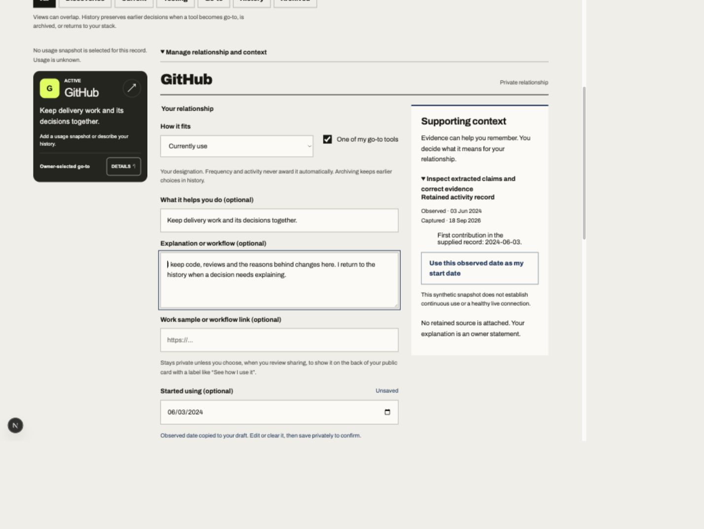
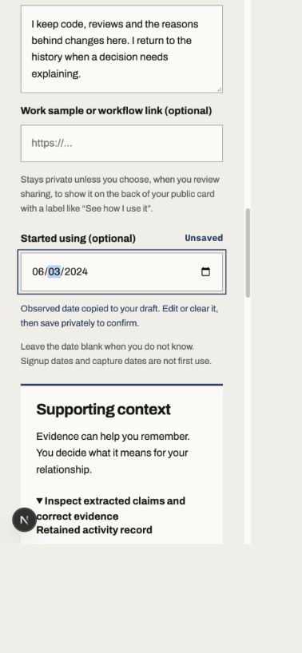
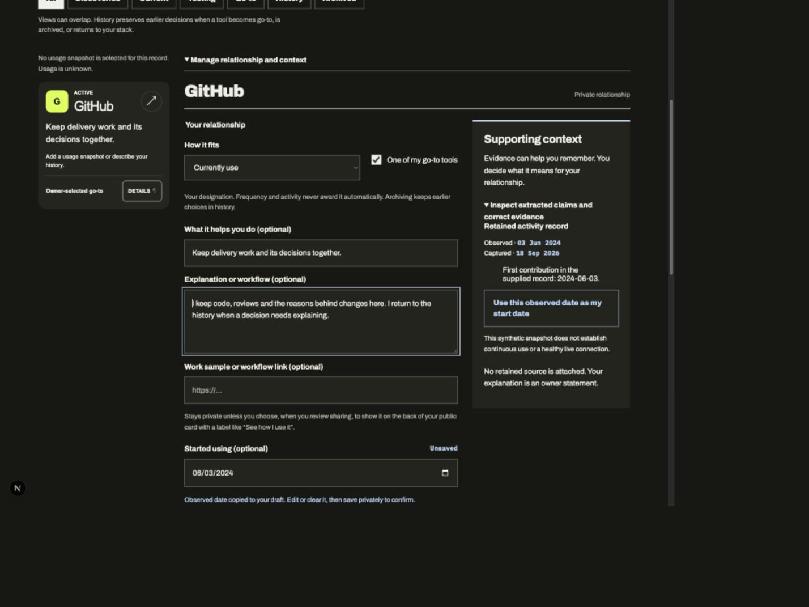
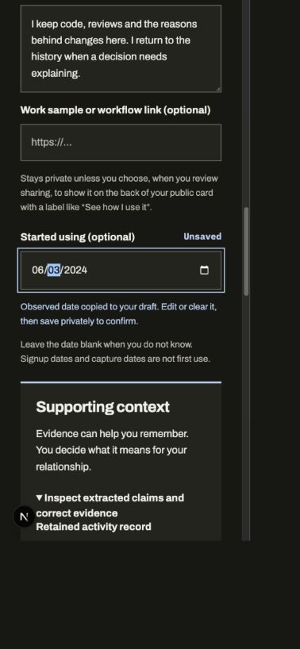

Paper desktop · 1440 CSS px

Implementation · 1440 CSS px · scrolled editor

Paper source at left, local implementation viewport at right. Synthetic data. The implementation preserves the current card browser and complete controls. Captures have inconsistent scaling; this is a preliminary comparison, not a pixel-match verdict.




